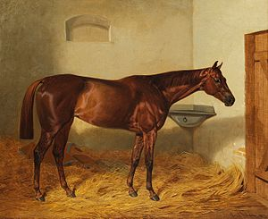

 Kincsem Blaskovich Ernő tápiószentmártoni lótenyésztő birtokán született 1874-ben, Waternymph nevű, angol telivér fajtájú anyját Kisbéren fedeztették, ahol az apamén az 1872-ben 5500 fontért Angliában megvásárolt Cambuscan volt. A sportsikerei révén később világhírűvé vált magyar versenyló Magyarországon kívül Európa több országában, Ausztriában, Angliában, Franciaországban, Csehországban és Németországban, 13 versenypályán, 54 alkalommal állt rajthoz és 54 győzelmet aratott. Győzelmeinek értékét emeli, hogy kancaként (nőstényként) verte meg a méneket, ami a lóversenyeken kivételesnek számít.
Első hat győztes futamát Németország különböző versenypályáin teljesítette. Háromévesként megnyerte az osztrák Derbyt, de nyert Baden-Badenben, Pozsonyban, és a „Magyar St. Leger díj” pesti futamán is (az St. Leger a 3 éves évjárat utolsó nagy csatáját jelenti világszerte, extra hosszú távon, 2800 méteren). Négyévesen Bécsben kezdte a versenyszezont, 1878. április 22-én. Addig 27 versenyen indult vereség nélkül. Egyedül a francia tenyésztésű, akkor négyéves Verneuil nevű mént tartották hasonló képességűnek.
Utolsó futása 1879. október 21-én a pesti Kancza-díj volt, amelyet "canterben nyerve" tíz hosszal nyert meg Ilona és Dagmar ellen. A gödi méntelep ekkoriban központi hellyé vált mindazok számára, akiknek Magyarországon fontos volt a lósport. Kincsem győzelmei idején a lapok saját tudósítókat utaztattak Angliából Gödre, hogy beszámoljanak az értékes és népszerű „wonder mare of Hungary” állapotáról. 1874-1887 körül Gödön volt a magyar lóversenyzés egyik legfontosabb centruma.
Kincsem lábai hatévesen már nem voltak egészségesek, futtatni szerették volna, azonban a tréningek során kiderült, hogy ízületei már elkoptak és közben még egy csikótól rúgást is kapott, amitől le is sántult. Ettől kezdve új terepen, sokat ígérő tenyészkancaként számított rá a tulajdonosa.
A kiszolgált versenylovat Kisbérre küldte tenyésztésbe, ahol később öt kiscsikót ellett, két mént és három kancát.
1883-ban Kincsemnek orr-sipoly betegsége lett, ezért 1884-ben Kincsem rövid szülési „szünetet tartott” és emiatt nem is fedeztették, abban az évben egész nyáron a fogarasi havasi legelőn pihent és teljesen egészséges lett. 1884-ben újra Buccaneerhez vezették fedeztetni, akitől 1885. március 14-én megszületett első méncsikója Talpra Magyar. Ezt követően az 1886-ban született Kincsőr szintén ménnek született, akinek az apaménje Doncaster volt. Kincsőrt be akarták nevezni a hamburgi német Derby-re, de hirtelen elpusztult (halva találták az istállója boxában, a híradások szerint valószínűleg megmérgezték) és így nem érhetett el komolyabb eredményeket. A csodakanca utolsó csikója Kincs volt, a kiscsikó 1887-ben született. Később Kincs kancacsikója Napfény is nagyanyja nyomába lépett és eredményes versenylóvá vált.
Utolsó csikójának ellése után 1887-ben Kincsem megbetegedett, gyomor és bélgörcsök jelentkeztek nála. Tizenhárom éves korában, amikor éppen a születésnapja volt, kimúlt a legendás telivér és anyakanca.